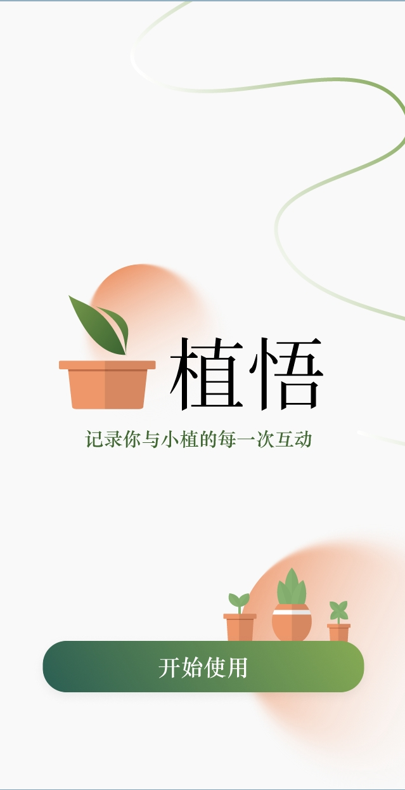
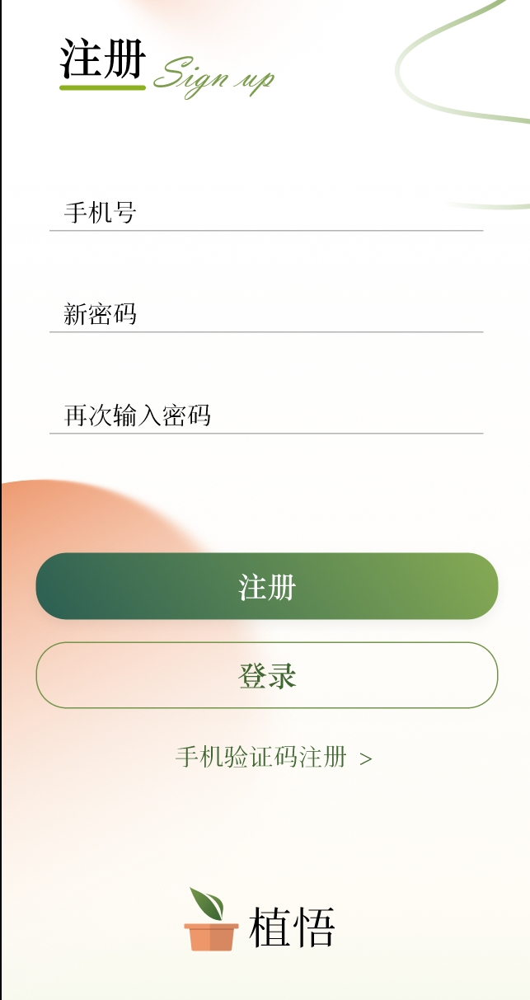
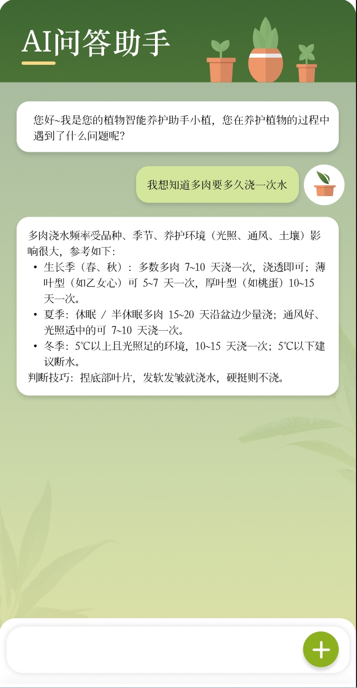
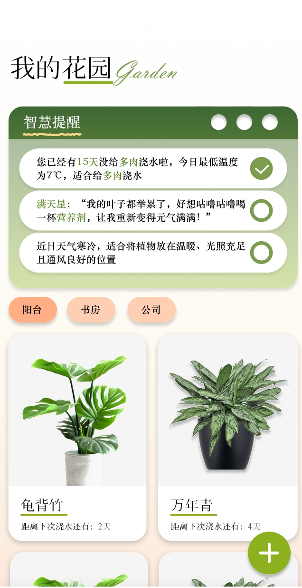
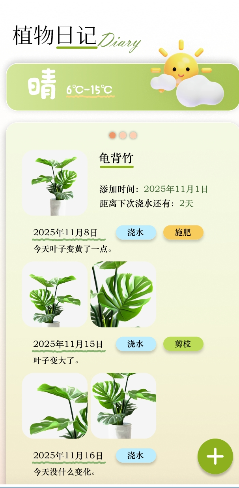

植悟养护助手
微信小程序
网页端
一款面向植物爱好者的养护提醒与智能检测病害小程序。解决用户养花三大痛点。“忘”“盲”“茫” 开发一套集成智能提醒、记录功能、AI辅助的软件系统，实现养护全流程数字化管理， 让每位用户告别“植物杀手”，轻松享受绿色乐趣。
核心理念
核心理念： 从“工具”进化为“伴侣” 四大创新点： 1.智能提醒动态规划：下次养护时间 = 植物习性 + 历史记录 + 实时天气数据 2. 拟人化交互：将植物视为伙伴，极大提升用户粘性与养护乐趣 3. ai养护助手：LLM+RAG 4. 种植日记：一键打卡 + 图文日记 + 环境快照 5.视觉诊断：识别植物品种、检测病灶、辅助诊断
设计初心
通过问卷调研收集了50+校园用户的养护习惯与痛点，绘制用户画像与旅程图。 根据反馈迭代了三版原型，最终确定了“拍照识别 + 日历提醒 + ai养护助手”5大核心模块。 植悟=科学的算法+有趣的灵魂+人类与AI的有机连接 我们希望能够降低园艺门槛，提升生活品质，用技术治愈人心，让每个人都能成为养花专家。
界面展示



